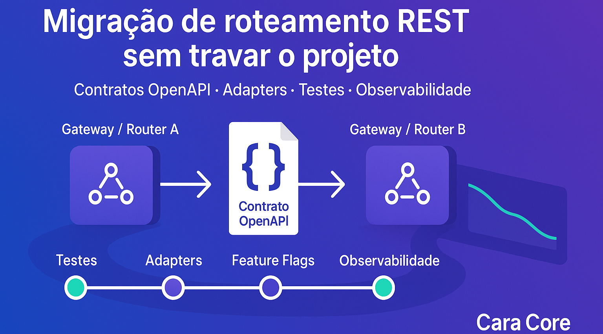

Mudan�a de ferramenta de roteamento REST: como planejar para n�o travar seu projeto
Toda empresa que cresce e precisa escalar suas integra��es passa por um dilema: qual ferramenta de roteamento REST utilizar.
H� alguns anos, a TechMall (empresa fict�cia de e-commerce) adotou uma stack baseada em Spring Boot com Camel, que resolvia bem a orquestra��o de APIs REST. Mas, com a evolu��o do neg�cio e a ado��o de arquiteturas cloud-native, surgiu a necessidade de migrar para outra plataforma de roteamento, mais enxuta e com melhor suporte para Kubernetes e AWS Lambda.
Trocar a ferramenta de roteamento n�o — algo incomum: frameworks evoluem, novos players surgem, a arquitetura da empresa muda. Mas, se mal planejada, essa transi��o pode causar quebras silenciosas, retrabalho e aumento de custos.
Quais cuidados ter na mudan�a de ferramenta de roteamento?
1. Separa��o de responsabilidades
O roteamento (quem recebe e para onde vai) n�o deve carregar a l�gica de neg�cio.
A l�gica de neg�cio precisa estar isolada em services ou beans independentes.
Assim, se trocar Camel por Quarkus, ou Spring MVC por Micronaut, voc� troca s� a �porta de entrada� e n�o o core do sistema.
2. Contratos bem definidos (OpenAPI)
Ter contratos OpenAPI atualizados — essencial.
Se a ferramenta mudar, o contrato garante que consumidores externos n�o percebam a diferen�a.
Ajuda tamb�m na automação de testes e na documenta��o.
3. Camada de adapta��o (adapters/facades)
Crie adapters para lidar com transforma��es de payload (JSON, XML, Avro).
Isso reduz o acoplamento com o roteador.
No caso de troca, basta reimplementar o adapter e n�o toda a aplica��o.
4. Testes de contrato e integra��o
Automatize testes com ferramentas como RestAssured ou Postman/Newman.
Antes de migrar, garanta que a su�te de testes cubra os endpoints mais cr�ticos.
Ap�s a troca, execute a mesma su�te para validar que nada se quebrou.
5. Estrat�gia de transi��o gradual
Rodar duas stacks em paralelo por um tempo (antigo e novo roteador).
Usar feature flags ou API Gateway para direcionar parte do tr�fego ao novo roteador.
Monitorar m�tricas de lat�ncia, erros e consumo.
6. Observabilidade desde o in�cio
Configurar logs estruturados, m�tricas e tracing distribu�do (OpenTelemetry).
Isso ajuda a identificar problemas que n�o apareceriam em ambiente de teste.
A li��o da TechMall
No caso da TechMall, a mudan�a foi de Camel para Micronaut. Gra�as — separa��o clara entre rotas e l�gica de neg�cio, a equipe conseguiu reimplementar os endpoints principais em poucas semanas.
O segredo n�o foi a escolha da nova ferramenta em si, mas o planejamento da migra��o: contratos bem definidos, testes robustos e uma arquitetura desacoplada.
Conclus�o
Trocar de ferramenta de roteamento REST — quase inevit�vel em sistemas de longa vida. A tecnologia muda, mas o que garante a sucess�o saud�vel n�o — o framework — � a disciplina arquitetural.
Quem projeta APIs pensando em contratos claros, camadas bem separadas e testes automatizados transforma a troca de roteador em um ajuste natural, e n�o em uma reescrita traum�tica.
No fim das contas, mais importante do que �qual ferramenta usar� — como preparar o c�digo para mudar de ferramenta quando o futuro exigir.
Hashtags
Contato
- E-mail: suporte@caracore.com.br
- Site: www.caracore.com.br
- LinkedIn: Cara Core Informática
Conecte-se conosco no LinkedIn para mais conte�dos sobre desenvolvimento e inova��o tecnol�gica!
Seguir no LinkedIn